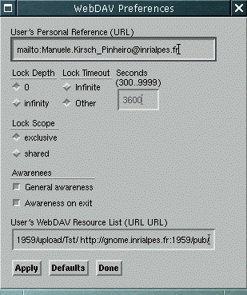

The WebDAV (WWW Distributed Authoring and Versioning) is a set of extensions to the HTTP protocol, which allows users to collaboratively edit and manage web resources on remote servers. It aims to extend the HTTP protocol to give place to an open architecture at protocol level, to develop new distributed authoring tools in the web, specially emphasizing the collaborative authoring of web pages (see RFC 2518). WebDAV defines operations over properties, collections, namespaces and overwriting protection (lock mechanism), and for these operations, it defines new methods, headers, request and response entity bodies. Nevertheless, versioning features, present in the original proposition, have been moved to Delta-V IETF work group, which aims to extend WebDAV and HTTP/1.1 for those features (see E. J. Whitehead's paper "The future of Distributed Software Development on the Internet").
The lock mechanism defined in WebDAV has been design to prevent the resources overwriting (that is, to prevent the lost update problem) using the operations lock and unlock. A lock controls the write access to a resource by limiting HTTP writing operations, like PUT, POST and DELETE. This means that only somebody who knows the lock will be able to execute those operations. The WebDAV protocol also defines two lock scopes: anexclusive and a shared lock. An exclusive lock guarantees that one person possess the lock, and no one else will be able to lock the resource (it does not affect the resource reading). A shared lock give allows to a group of users to create their locks over a resource, but they must trust each other to prevent access problems. Besides, each lock has a timeout, but the user cannot forget that locks may disappear in the server due to exceptions in the server.
We can find more informations about WebDAV in RFC 2518 and also at WebDAV.org website.
Amaya has an optional and limited support for WebDAV. This support include the following operations: lock/unlock a WebDAV compilant resource, view the WebDAV properties of a resource and lock discovery capabilities. Besides, this support includes some awareness functions, that can automatically inform user about locked resources.
The WebDAV support present in Amaya intents to help small groups of users
to edit collaboratively their Web pages. To show you how it works, here is an
example: supose that you have a WebDAV server (indeed, you
must have a Web server that supports WebDAV to work with it)
named davserver.mycompany.com, and you and your colleagues want
to edit collaboratively some documents that are in the WebDAV folder
/shared/ (WebDAV folders are called collections).
So, imagine that you need change the document
http://davserver.mycompany.com/shared/Doc1.html. To do so, you
will load the document in your Amaya editor, and then you can
lock this document (Lock resource entry in Cooperation menu _ see Figure 1) . Once
you locked the document, if one of your colleagues try to save some change in
this document, s/he will be warned about your lock, and updates will not be
lost automatically. Thus, while the document is locked, you can savely modify
it, and when you've finished your work, you can unlock the
document, allowing you colleague to lock the document and do his/her
modifications.
Therefore, if you want to be aware whether a colleague locked a Web page,
you can use the View resource properties entry in Cooperation menu to see all the properties of the page, or
you can configure Amaya to automatically inform you if the page is locked. To
do so, you will need to open the Cooperation->Preferences dialog,
mark the General Awareness option and put the your shared folder's
reference in the User's WedDAV Resource list field
(http://davserver.mycompany.com/shared/, as shows Figure 2).
Once you did this, when loading a page locked by a colleague under
http://davserver.mycompany.com/shared/ folder, you will be
notified by Amaya about this.

This options are the Cooperation -> Preferences options. Default value are marked:
DAV_DEPTH= [ infinity | 0 ]DAV_TIMEOUT= [ Infinite | Second-XXXX
]DAV_LOCK_SCOPE= [ exclusive | shared
]DAV_USER_URL= [ URL ]DAV_AWARENESS= [ yes
|no]DAV_AWARENESS_ONEXIT=[ yes
|no]DAV_URLS= [ URL URL URL ... ]WebDAV support is an optional feature of Amaya. To compile and use it, you will need the following:
Once you made the cvs check-out of Libwww with WebDAV support and get Amaya sources , you should follow this bootstrap instructions (under Linux/Unix environments - for windows environments, see Amaya and Libwww homepage):
(Manuele Kirsch Pinheiro, June, 13, 2002.)